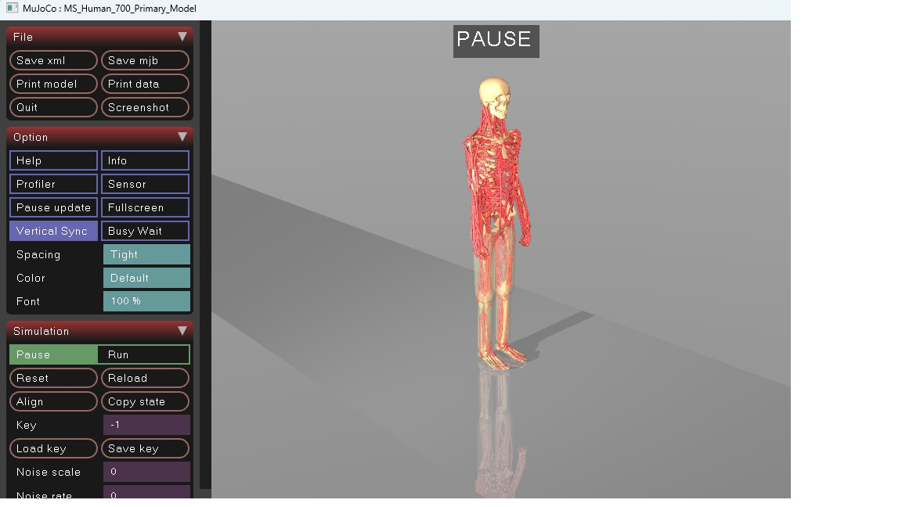

全身肌肉骨骼模型 MS-Human-700
MS-Human-700 模型代表了人体全身肌肉骨骼系统，其特点包括：
- 90个身体节段
- 206个关节
- 700个肌腱单元
- 解剖学上合理的参数
- MuJoCo 整合
该模型能够模拟全身动力学以及与各种设备的交互，使其适用于具身智能、机器人和生物力学领域的研究。
运行
1.下载并加载模型
# 克隆模型仓库
git clone https://github.com/LNSGroup/MS-Human-700.git
# 使用mujoco打卡模型
mujoco/bin/simulate.exe MS-Human-700/MS-Human-700.xml

DynSyn
DynSyn：用于过驱动具身系统高效学习与控制的动态协同表示1。
1.安装
git clone https://github.com/OpenHUTB/DynSyn.git
cd DynSyn
conda create -n hutb_3.9 python=3.9
conda activate hutb_3.9
pip install poetry
poetry install
2.运行
# 生成 DynSyn 到 log 文件夹下
python dynsyn/dynsyn.py -f configs/DynSynGen/dynsyn.yaml -e myoLegWalk
# 训练
python dynsyn/sb3_runner/runner.py -f configs/DynSyn/myowalk.json
"load_kwargs": {
"dynsyn_weight_amp": 0.1
}
Qflex 控制
Qflex 一种可扩展且高效的在线强化学习（RL）方法2，用于高维动态系统的连续控制。此类系统通常面临诸多挑战，严重阻碍高效学习：
- 高维性：状态-动作空间的大小随维度迅速增长，导致显著的“维度灾难”效应；
- 过度驱动：在执行器数量远大于自由度的情况下，多个动作序列可能产生无法区分的运动学特征，但内部力和成本却可能不同。
git clone --recurse-submodules https://github.com/LNSGroup/Qflex.git
cd Qflex
conda activate hutb_3.12
#
python scripts/train.py --alg qflex --env MS700Locomotion-v1 --seed 100 --total_step 50000000 --num_vec_envs 224 --hidden_dim 1024 --diffusion_hidden_dim 1024 --record_video
# 减少 num_vec_envs 用于调试:
python scripts/train.py --alg qflex --env MS700Locomotion-v1 --seed 100 --total_step 50000000 --num_vec_envs 4 --hidden_dim 1024 --diffusion_hidden_dim 1024 --record_video
报错：No module named 'relax.spinlock'
Windows 下安装relax-0.1.0：
cd Qflex
# windows下需要注释掉 https://github.com/LNSGroup/Qflex/blob/a028cfa76525a62bfb90d76c6f1535f697121383/src/futex.c#L3
pip install -e .
-
He, K., Zuo, C., Ma, C. & Sui, Y. DynSyn: Dynamical synergistic representation for efficient learning and control in overactuated embodied systems. arXiv preprint arXiv:2407.11472 (2024). ↩
-
Wei, Y., Zuo, C. & Sui, Y. Scalable exploration for high-dimensional continuous control via value-guided flow. in The fourteenth international conference on learning representations (2026). ↩